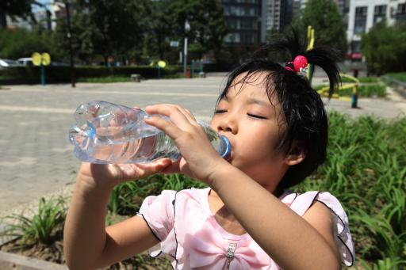

中暑

1.患者皮肤灼热、发红，可能干燥，也可能潮湿，患者可能出现意识障碍，呕吐以及发热
2.请尽快拨打120，或请他人帮助呼叫
严重中暑会危及生命。
3.如果需要，用布包裹冰块或者冰袋，敷于患者的手腕、脚踝、腹股、颈部和腋窝处，持续快速降温
常见问题
中暑的三种类型是什么？
热痉挛，热衰竭和热射病，热射病最为严重，可能危及生命。
什么是热痉挛？
热痉挛是在高温高湿的环境中，体液电解质大量丢失，造成肌肉疼痛和痉挛，通常累及腿或腹部。